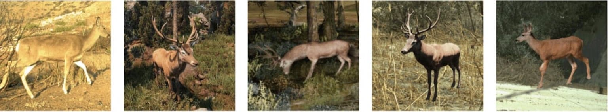

Call for Applications

Applications for 2027 are closed.
The scheduled decision notification date was the end of July 2026.
Workshop dates:The 2027 course has a hybrid format consisting of two parts - 3 days of remote work, followed by two weeks of in-person training. Note that there is no fully remote option.
- Remote: January 13-15, 2027
- In person: January 18-29, 2027
We invite applications for the fifth Computer Vision for Ecology (CV4E) workshop, a two-and-a-half-week hands-on intensive course in CV targeted at graduate students, postdocs, early faculty, and junior researchers in Ecology and Conservation. Each student in the workshop will learn to build computer vision models to help answer their ecological research questions. Students are expected to propose a project as part of their application materials, and clearly define (1) the question they hope to answer, (2) the data they plan to use, and (3) the broader impacts of their work if successful. Over the years, our students have tackled diverse projects across many ecological domains (check out the projects from 2022, 2023, 2025, and 2026 for examples). Each student in the workshop builds a computer vision prototype to help efficiently answer their own ecological research question. Students are expected to propose the project in their application, clearly defining the ecological question they hope to answer, the data they plan to use, and the broader impacts of their work if successful.
Deadline for applications: June 13, 2026 Anywhere On Earth. Applications received after the deadline will not be considered.
Notification of acceptance: End of July 2026.
Application Materials
The application includes a written project proposal, personal statement, data and Python readiness plan, CV, and one letter of reference. The following should be combined into a single PDF for submission:
-
Project proposal (1-page, 11pt font, 1" margins) addressing the following:
- Research problem -- What question are you interested in and how would computer vision methods better enable you to address it?
- Motivation -- What would success look like? What is the likely impact of your research for science, policy, education, and conservation?
-
Data plan (max 1 page). Please answer the following questions directly:
- What data do you have in hand? What is the overall data storage size? Where is it located? What is the temporal and spatial distribution of your data?
- Does your data need to be kept private? Do you have the rights to use your data? How is the data organized?
- If you plan to collect data (i.e., you do not already have your data in hand): What will it be? What is the data collection timeline? What is your backup plan?
- What labels do you currently have for your data?
- If you plan to label additional data, what is your plan and timeline?
- What format will the data and metadata be in?
- Data examples (optional, not included in page limit) - images/spectrograms can be directly inserted in the PDF, otherwise provide a link to Dropbox/Google Drive/etc. in the PDF, or upload a zip file.
- Python readiness (max 250 words):
- Describe your programming experience/history.
- Submit a link to a GitHub repository you have authored in Python, or if you are not yet proficient in Python provide a detailed plan for how you will learn Python in the time leading up to the workshop.
- Personal statement (1 page, 11pt font, 1" margins) describing your accomplishments, skills, and career objectives.
- CV (2 pages maximum)
- One letter of reference should be sent separately by the letter writer to SCBITraining@si.edu.
- Fill out this data form
How to Submit
Applications are closed for the 2027 edition.
Target Workshop Participants
- Senior graduate students, postdocs, early faculty, junior researchers in Ecology and Conservation.
- Familiarity with Python programming for data analysis. If you do not have existing Python familiarity, it is OK, in such a case, we require you to submit a plan for building Python skills in the time between acceptance and attendance of the workshop.
- A demonstrated interest in academic research in ecology and conservation or the deployment of technology for conservation impact. A record of published research on quantitative ecology and conservation or a record of technology deployment within conservation or governmental organizations is preferred.
- An ecology/conservation question in mind with access to a large image/audio/video/etc. dataset and the need for CV/ML methods to support such research. We will work with accepted applicants in the months leading up to the workshop to help them curate and label their datasets for CV/ML models.
- Scientists from communities facing large conservation challenges and from minoritized communities are especially encouraged to apply.
Course costs
Accepted students will be responsible for travel to and from SCBI, as well as a registration fee of $2823.30 that will cover:
- A shared room at the SMSC Residence Hall (single rooms available for extra cost)
- Full meal package including 3 meals/day and 2 coffee/tea breaks (Mon-Fri only) at the SMSC Dining Commons
- Access to remote GPU-accelerated compute and storage
- In-person lectures and group activities
- Small group work with dedicated instructors focused on thematically similar projects
- Support and preparatory sessions in the months leading up to the workshop
- Optional weekend social outings
We have limited financial aid available and will consider student needs on a case-by-case basis. Please fill in the appropriate fields in the application to be considered for financial support. We believe no qualified student should be turned away due to financial inaccessibility and will do our best to make aid available. If you have any questions regarding receiving aid, please email us at SCBITraining@si.edu early in the application period. If you are interested in supporting a student, please contact us at cv4ecology@csail.mit.edu.